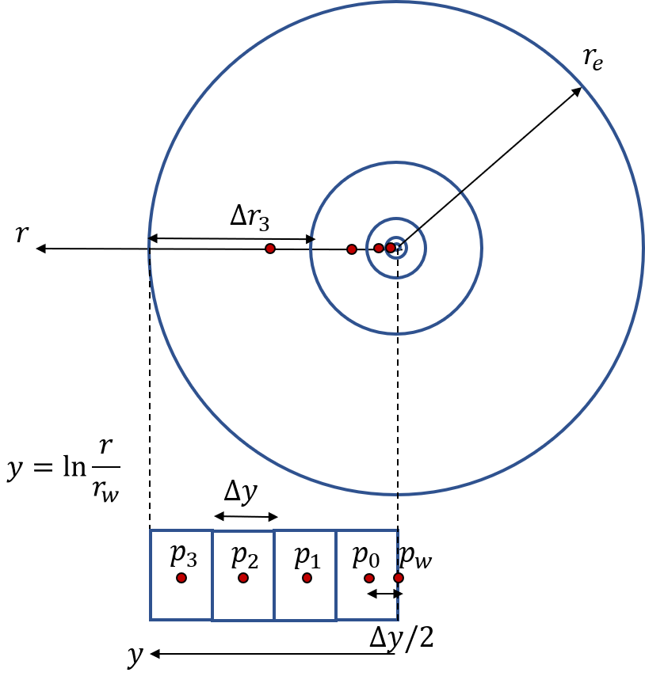

Learning objectives. By completing this project, the student will:
Reservoirs are large pieces of porous rocks (usually sediments) that are buried underground. The size of a reservoir may vary a lot: typically by as much as 100-1000 m horizontally, and 10-100 m vertically. A sedimentary rock consists of many small grains, like sand on a beach. During geological time the sand grains have become cemented together, but still there is plenty of room for oil, water and gas to occupy the pores between the grains. Usually 20-30 \( \% \) of a rock is void space. The absolute permeability is a measure of how easily fluids flow through the rock. It plays the same role as does the inverse of resistance in electromagnetism. For example, a high permeability means that fluids flow easily through the rock, just as a low resistance conductor transmits electric current easily. What actually drives the fluid flow are pressure differences, and if we continue the analogy with electricity, these pressure differences play the same role as voltage gradients inside a conductor.
When a reservoir is opened for production, the pores close to the producer might clog due to the mobilization of particles, and because of chemical reactions taking place etc. [1]. If this happens, the permeability will be reduced. To monitor changes in reservoir permeability, a key tool is well pressure testing [2], which is the topic of this project. It turns out that by studying the time-dependence of well pressures during production, one can actually learn a lot about the properties of a reservoir. This information is clearly extremely relevant for an oil company, but it of equal importance in geothermal applications, as well as during groundwater monitoring. Reservoirs are huge (\( \sim \) km size), and the well is only about half a foot, but still the information coming from a single producing well can provide valuable information about, e.g., the size of the reservoir, or about formation damage close to well. If one finds that the reservoir has become clogged, one has to implement some kind of intervention, after which one can measure the effect of the intervention by repeating the well test.
Another factor that may be important to consider is reservoir compaction. As fluids are produced, the pressure in the formation drops, and this could lead to large increases in the effective stress in the reservoir, and to seabed subsidence. An example of this is Ekofisk, Norway's largest oil field, where platforms were observed to sink by several meters [3]; even if the reservoir itself is located more than 3 km below the seabed! A similar process has been taking place in Venice, which is currently sinking. Part of the recorded subsidence of the city has been attributed to groundwater pumping operations [4].
Darcy's law [5] is frequently used to calculate the relationship between flow rate and pressure when a fluid phase is moving inside a permeable medium. If we neglect gravity and if we use a consistent set of units (e.g., SI-units), Darcy's law can be expressed in coordinate-free form as $$ \begin{equation} \vec{u} = - \frac{\TENSOR{k}}{\mu}\nabla p \,, \tag{1} \end{equation} $$ where \( \vec{u} \)[$\mathrm{L/T}$] is the Darcy velocity, \( \TENSOR{k} \)[$\mathrm{L^2}$] is the absolute permeability tensor, \( \mu \)[$\mathrm{ML/T}$] is the fluid viscosity, and \( p \)[$\mathrm{M/LT^2}$] is fluid pressure.
Part 1.
Consider a homogeneous cylindrical core sample of length \( L=7 \) cm, diameter \( d=3.8 \) cm. Imagine that we have first saturated the sample with water, and that we subsequently perform a sequence of injection tests in which water is pumped through the core at a constant volumetric flow rate, \( Q \). For each flow rate, we record the (steady-state) pressure difference across the core, \( \Delta{p} \). Darcy's law then implies that: $$ \begin{equation} Q = \frac{kA}{\mu}\cdot\frac{\Delta{P}}{L}\,, \tag{2} \end{equation} $$ where \( A=\pi{r}^2 \) is the cross-sectional area of the core.
core_flood.dat. Make a scatter plot of \( \Delta{P} \) versus \( Q \).At room temperature, the viscosity of water is approximately 1 cP (or \( 10^{-3} \) $\mathrm{Pa\cdot s}$ in SI-units).
The time-dependent pressure development in a reservoir can be studied by setting up a fluid mass balance: $$ \begin{equation} \tag{3} \DDT{(\phi \rho)} = -\nabla\cdot (\rho \vec{u})\,, \end{equation} $$ where \( \rho \)[$\mathrm{M/L^3}$] is the fluid density, and \( \phi \) is the porosity; the void fraction of the reservoir that permits fluid flow. We are going to assume that
we end up with the diffusivity equation.
If we use cylindrical coordinates, and if we assume perfectly radially symmetric flow, the diffusivity equation reduces to $$ \begin{equation} \tag{11} \DFDT{p} = \eta \frac{1}{r} \DDR{\left(r\DFDR{p}\right)}\,. \end{equation} $$ To solve this equation we need some boundary conditions. Later when doing numerical calculations, we shall assume that there is a vertical well placed in the middle of the reservoir, with well radius \( r=r_w \). The well is set to produce fluids at a constant flow rate, \( Q>0 \), in other words: $$ \begin{align} \tag{12} \frac{2\pi h kr}{\mu}\frac{\partial p}{\partial r}|_{r=r_w} = Q \,. \end{align} $$
Far away from the well, at a distance \( r=r_e \), we shall assume that there is no flow of fluids: $$ \begin{align} \tag{13} \frac{\partial p}{\partial r}|_{r=r_e} =0 \,. \end{align} $$
Note that equation (12) is a special case of Darcy's law, equation (1); this can be seen by inserting \( \nabla=\partial/\partial r \), and \( Q=-u A=-u\cdot 2\pi r h \) \footnote{We use the sign convention that \( Q>0 \) for production from the well.}.
The diffusivity equation is extremely hard to solve exactly, and explicit formulas can be found only in idealized cases. One such solution is called the line source solution. It employs slightly different boundary conditions than formulated above:
You are free to code the project as you see fit, but regardless of how you do it you should strive to a) write clear, concise code and b) reduce unnecessary code repetition. One way to achieve that is to use classes, because classes provide a mechanism for wrapping parts of your code into objects, which you can afterwards reuse in several places.
If you want to use classes for this project, there are really only a couple
of things you need to know. First, all of your classes should include a special
function called __init__, in which you declare the variables (attributes)
you wish an instance / object of the class to keep track of.
Second, all of these attributes should start with the keyword self,
followed by a dot and then the actual attribute name.
Third, functions inside a class should have self as the first function
argument (when defining the function).
All of this is best understood via an example:
class Person:
"""
A class representing custom objects of the type Person.
"""
def __init__(self, name, age):
self.name = name
self.age = age
self.species = 'Human'
def greeting(self):
print('Hello, my name is {}.'.format(self.name))
This first few lines tells Python that in order to create a new object of
the type Person, you have to provide the name and age of the person as
input arguments, for example:
p1 = Person('John', 36)
When executing the above code, Python automatically invokes the __init__
method, and sets the object attributes self.name and self.age based on
the user input. In addition, we see that the object p1 has a third attribute,
species, which is hard-coded inside __init__, and is therefore not
needed as input (this is a good way to set constants that you expect to
re-use across parts of your program).
Once we have created a particular Person object, we can call the other
function we have defined, namely greeting:
p1.greeting()
Note that we do not include self as an input argument when calling the
function; only when we define it \footnote{This is to let Python know that
the function should be called on a particular object.}
If you want to access variables belonging to an instance of the class,
you can also access it via "dot-notation", e.g.:
print(p1.name)
print(p1.age)
__init__, and
then simply re-use them inside all your other functions.
However, you are not required to use classes to complete this project. If it seems too advanced at the moment, just code using ordinary functions. You should still try to make your functions re-usable, though!
You are going to implement a numerical solver for the radial diffusivity equation. To avoid unnecessary complications with units, you may use the following class definition as a starting point:
class RadialDiffusivityEquationSolver:
"""
A finite difference solver for the radial diffusivity equation.
We use the coordinate transformation y = ln(r/rw) to set up and
solve the pressure equation.
The solver uses SI units internally, while "practical field units"
are required as input.
Except for the number of grid blocks / points to use, all class
instance attributes are provided with reasonable default values.
Input arguments:
name symbol unit
--------------------------------------------------------------
Number of grid points N dimensionless
well radius rw ft
extent of reservoir re ft
height of reservoir h ft
permeability k mD
porosity phi dimensionless
fluid viscosity mu mPas (cP)
total compressibility ct 1 / psi
constant flow rate at well Q bbl / day
initial reservoir pressure pi psi
constant time step dt days
maximal simulation time max_time days
-------------------------------------------------------------
"""
def __init__(self, N, rw=0.328, re = 100000., h=8.0,
k=500, phi=0.1, mu=1.0, ct=17.7e-6,
Q=1000, pi=2000, dt=0.1, max_time=10):
# Unit conversion factors (input units --> SI)
self.ft_to_m_ = 0.3048
self.psi_to_pa_ = 6894.75729
self.day_to_sec_ = 24*60*60
self.bbl_to_m3_ = 0.1589873
# Grid
self.N_ = N
self.rw_ = rw*self.ft_to_m_
self.re_ = re*self.ft_to_m_
self.h_ = h*self.ft_to_m_
# Rock and fluid properties
self.k_ = k*1e-15 / 1.01325
self.phi_ = phi
self.mu_ = mu*1e-3
self.ct_ = ct / self.psi_to_pa_
# Initial and boundary conditions
self.Q_ = Q*self.bbl_to_m3_ / self.day_to_sec_
self.pi_ = pi*self.psi_to_pa_
# Time control for simulation
self.dt_ = dt*self.day_to_sec_
self.max_time_ = max_time*self.day_to_sec_
self.current_time_ = 0.
Part 1.
line_source_solution that returns the analytical line source solution, equation (16), as a function of \( r \) and \( t \). The function should work both in the case when \( r \) and \( t \) are floating-point numbers, and when one of them is a float and the other is a NumPy array.plot_line_source_solution that makes a plot of the reservoir pressure versus radial distance at a specific point in time. This second function should take the time in question as an input argument, and it should call line_source_solution in order to compute the pressures.The following code snippet shows how the above functions might work in practice (if following the class approach):
# Create a solver object. Use only default arguments:
solver = RadialDiffusivityEquationSolver(N=100)
# We can calculate the analytical solution at a specific point
# in space and time:
analytical_sol = solver.line_source_solution(10.0, 42.0)
# ...or at a specific position, but at several times:
time_array = np.linspace(0.0, 50, 51)
analytical_sol = solver.line_source_solution(10.0, time_array)
# ...or at a specific time, but at multiple locations:
position_array = np.linspace(0.1, 10, 11)
analytical_sol = solver.line_source_solution(position_array, 42.0)
Part 2.
Part 4.
We are now going to discretize equation (19). We start by dividing the total flow domain into \( N \) equally sized grid blocks in the \( y \)-coordinates, see figure 1 for an illustration. The numerical pressure solution will be calculated at the midpoints (centers) of the \( y \)-blocks; note that this does not correspond to the center of the \( r \)-blocks!
Figure 1: Sketch of the coordinate transformation \( r\rightarrow{y} \). Note that the pressure is always evaluated at the center of the \( y \)-blocks.

y_centres_ or y_midpoints_.__init__ function.
However, the plotting should not be included inside __init__.
Part 5. Let \( i \) denote an arbitrary grid point inside our simulation domain. To discretize the left-hand side of (19) for point \( i \), we use the following approximation: $$ \begin{equation} \frac{\partial p}{\partial t} = \frac{p(y_i, t+\Delta t)-p(y_i, t)}{\Delta t} + \mathcal{O}(\Delta t) \equiv \frac{p_{i}^{n+1}-p_{i}^n}{\Delta t} + \mathcal{O}(\Delta t). \tag{22} \end{equation} $$ We have introduced the following short-hand notation: \( p_{i}^{n+1}\equiv p(y_i, t+\Delta t) \), and \( p_{i}^n\equiv p(y_i, t) \). Next, we are going do discretize the spatial (right-hand side) term of Eq. (19). However, before we can approximate partial derivatives with respect to \( y \), we have to decide what value to use for the time; after all, the pressure is a function of both space and time, \( p=p(r, t) \).
If we select the time \( t \), corresponding to the pressure solutions \( p_{i}^n \), we say that we use an explicit scheme. On the other hand, if we use \( t+\Delta{t} \), we say that we have an implicit scheme. It turns out that the implicit scheme is much more numerically stable, hence we choose that option here: $$ \begin{equation} \frac{\partial^2 p}{\partial y^2} =\frac{p^{n+1}_{i+1}+p^{n+1}_{i-1}-2p^{n+1}_i}{\Delta y^2} + \mathcal{O}(\Delta{y}^2) \tag{23} \end{equation} $$
Part 6.
Once you have understood what goes on in special case \( N=4 \), it is time to tackle the general situation (any choice of \( N \)). We assume the pressure is the same everywhere at time zero: $$ p_{0}^0=p_{1}^0=p_{2}^0\ldots=p_i \,. $$
After setting the initial condition, we need to implement a time loop and solve the discretized equations (25) repeatedly for each time step: \( \Delta{t} \), \( 2\Delta{t} \), \( 3\Delta{t} \), etc. As before, we need to take special care when coding the equations for the first and last grid points, \( i=0 \) and \( i=N-1 \).
Part 1. Start by making three different Python functions:
setup_matrix, in which you store the coefficient matrix as a regular NumPy matrix\footnote{An \( N\times N \) NumPy array.}.setup_sparse_matrix, where only the non-zero elements of the matrix are stored. For ideas on how to do this, see the official SciPy documentation, e.g.: scipy.sparse.diags.rhs, which calculates the right-hand side of the linear equation system.Note that as long as we use a constant \( \Delta{t} \), we only need to set up the matrices once; when initializing the model. On the other hand, the right-hand side vector must be updated each time step.
Finish implementing the numerical solver for the radial diffusivity equation:
Although we have measured properties of a rock sample in the lab, the reality in the reservoir might be very different. In this exercise we are going to study data from a well test. During a well test, the production engineer starts to produce from the reservoir, while at the same time monitoring how the well pressure changes as a function of time.
Part 1.
well_test.dat into a Pandas DataFrame.So far we have only calculated the pressure distribution inside the reservoir; the actual observable well pressure is missing! However, we can estimate the well pressure by discretizing equation (21):
Part 3.
Notice that towards the end of the well test, the pressure starts to rapidly decline. This is actually a sign that the pressure wave has reached the end of the reservoir.